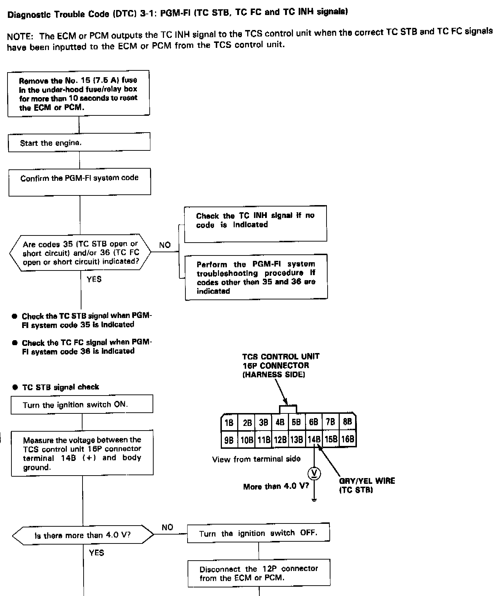
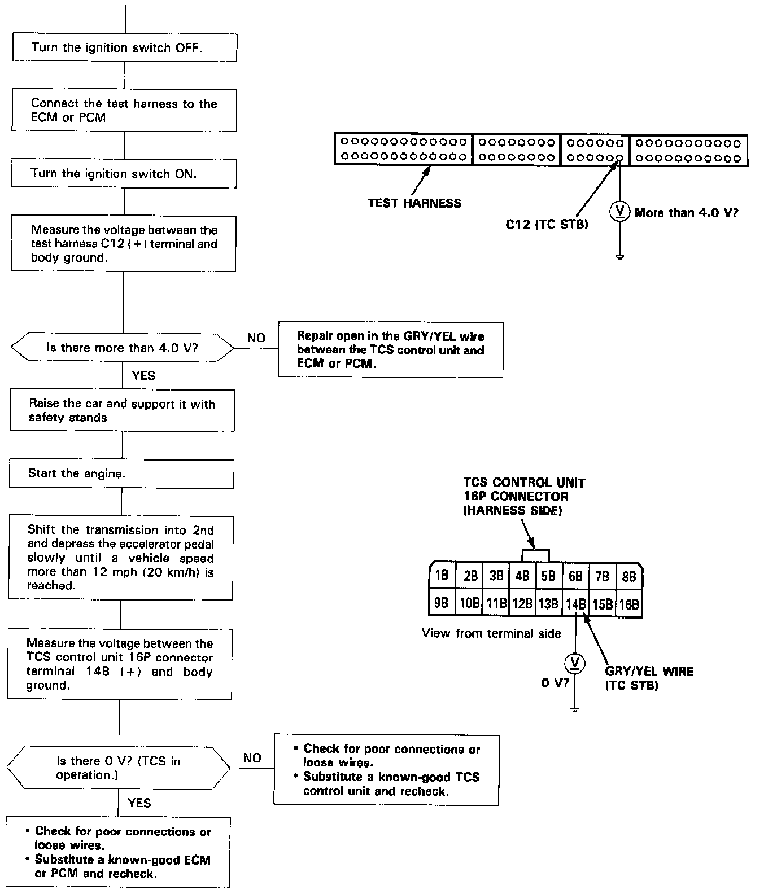
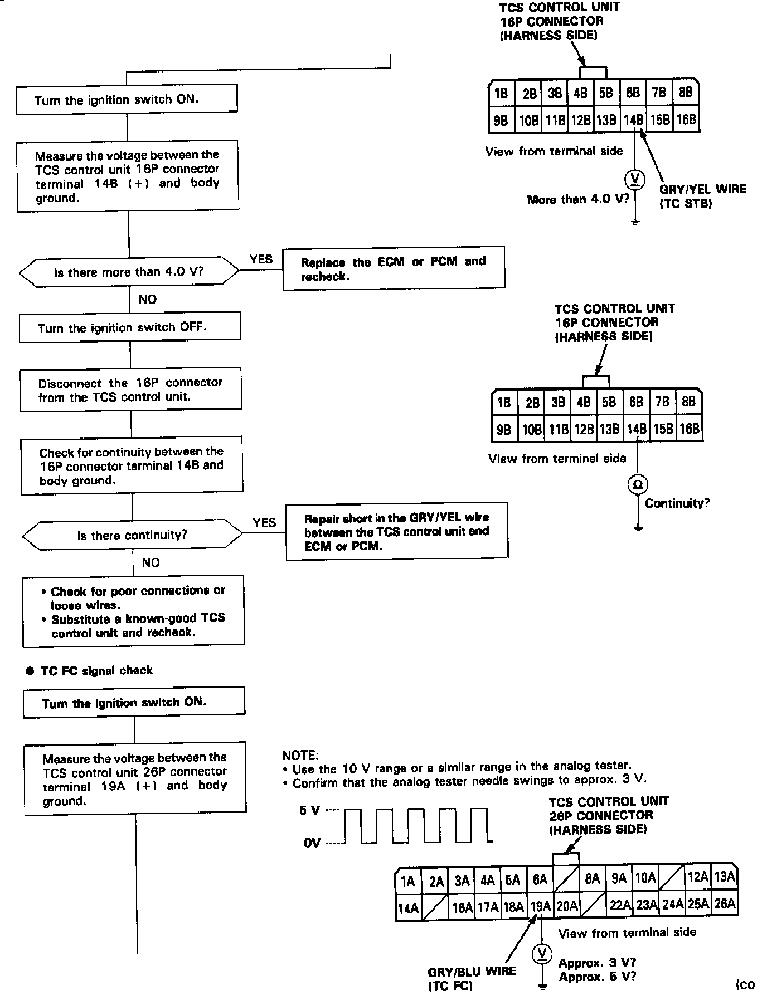
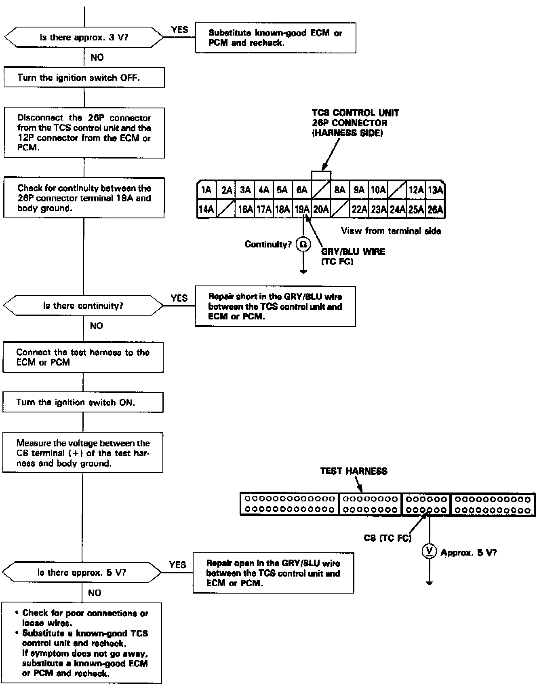
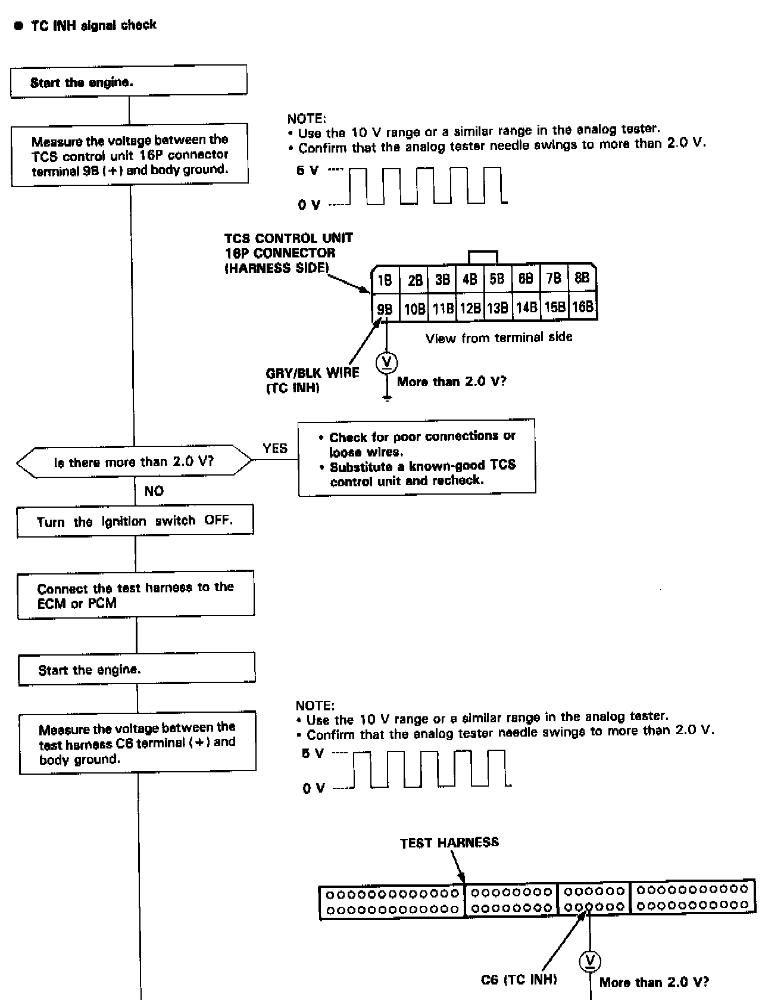
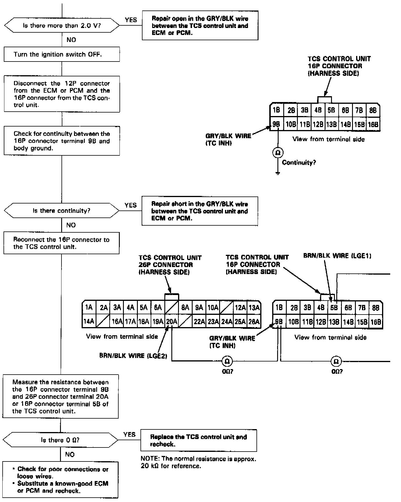

Operation CHARM
: Car repair manuals for everyone.
Home
>>
Acura
>>
1993
>>
Legend Coupe V6-3206cc 3.2L SOHC FI
>>
Repair and Diagnosis
>>
A L L Diagnostic Trouble Codes ( DTC )
>>
Testing and Inspection
>>
Manufacturer Code Charts
>>
Engine Control System
>>
DTC 36
DTC 36
CODE 36 TC FC SIGNAL

PART 1 OF 6

PART 2 OF 6

PART 3 OF 6

PART 4 OF 6

PART 5 OF 6

PART 6 OF 6